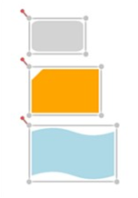
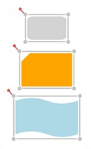
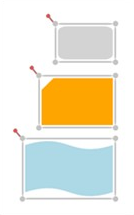

Alignment commands enable you to align selected objects (nodes and connectors) on a page with respect to a reference object. The first object in the selection is considered as the reference object.
Perform Alignment Operation
The following alignment commands are used to align objects:
Left Alignment
The AlignLeft command aligns all selected objects along the left corner of the reference object. This command can be executed in XAML and code behind. In the following code snippet, diagramControl is an instance of DiagramControl, and the XAML code snippet shows a button bound to the AlignLeft command.
|
[Xaml]
<Button Content="AlignLeft" Command="{Binding AlignLeft, ElementName=diagramControl}"/> |
|
[C#]
diagramControl.AlignLeft.Execute(diagramControl.View); |
|
[VB]
diagramControl.AlignLeft.Execute(diagramControl.View) |
The following screen shot illustrates the allignment of the last two nodes to the left with respect to the first node.

Figure 124 - AlignLeft command applied to Diagram Objects
Center Alignment (Horizontal Axis)
The AlignCenter command aligns all the selected objects to the center. This command center-aligns selected objects with respect to the horizontal axis, i.e., by changing the x-coordinate of the object. This command can be executed in XAML and code behind. In the following code snippet, diagramControl is an instance of DiagramControl, and the XAML code snippet shows a button bound to the AlignCenter command.
|
[Xaml]
<Button Content="AlignCenter" Command="{Binding AlignCenter, ElementName=diagramControl}"/> |
|
[C#]
diagramControl.AlignCenter.Execute(diagramControl.View); |
|
[VB]
diagramControl.AlignCenter.Execute(diagramControl.View) |
The following screen shot illustrates the allignment of the last two nodes to the center with respect to the horizontal axis of the first node.

Figure 125 - AlignCenter command applied to Diagram Objects
Right Alignment
The AlignRight command aligns all selected objects along the right corner of the reference object. This command can be executed in XAML and code behind. In the following code snippet, diagramControl is an instance of DiagramControl, and the XAML code snippet shows a button bound to the AlignRight command.
|
[Xaml]
<Button Content="AlignRight" Command="{Binding AlignRight, ElementName=diagramControl}"/> |
|
[C#]
diagramControl.AlignRight.Execute(diagramControl.View); |
|
[VB]
diagramControl.AlignRight.Execute(diagramControl.View) |
The following screen shot illustrates the allignment of the last two nodes to the right with respect to the first node.

Figure 126 - AlignRight command applied to Diagram Objects
Top Alignment
The AlignTop command aligns all the selected objects on the top of the reference object. This command can be executed in XAML and code behind. In the following code snippet, diagramControl is an instance of DiagramControl, and the XAML code snippet shows a button bound to the AlignTop command.
|
[Xaml]
<Button Content="AlignTop" Command="{Binding AlignTop, ElementName= diagramControl}"/> |
|
[C#]
diagramControl.AlignTop.Execute(diagramView.Page, diagramView); |
|
[VB]
diagramControl.AlignTop.Execute(diagramView.Page, diagramView) |
The following screen shot illustrates the allignment of the last two nodes to the top with respect to the first node.
Figure 127 - AlignTop command applied to Diagram Objects
Center Alignment (Vertical Axis)
The AlignMiddle command aligns all the selected objects at the center. This command center-aligns selected objects with respect to the vertical axis, i.e., by changing the y-coordinate of the object. This command can be executed in XAML and code behind. In the following code snippet, diagramControl is an instance of DiagramControl, and the XAML code snippet shows a button bound to the AlignMiddle command.
|
[Xaml]
<Button Content="AlignMiddle" Command="{Binding AlignMiddle, ElementName= diagramControl}"/> |
|
[C#]
diagramControl.AlignMiddle.Execute(diagramControl.View); |
|
[VB]
diagramControl.AlignMiddle.Execute(diagramControl.View) |
The following screen shot illustrates the allignment of the last two nodes to the center with respect to the vertical axis of the first node.
Figure 128 - AlignMiddle command applied to Diagram Objects
Bottom Alignment
The AlignBottom command aligns all the selected objects along the bottom of the reference object. This command can be executed in XAML and code behind. In the following code snippet, diagramControl is an instance of DiagramControl, and the XAML code snippet shows a button bound to the AlignBottom command.
|
[Xaml]
<Button Content="AlignBottom" Command="{Binding AlignBottom, ElementName= diagramControl}"/> |
|
[C#]
diagramControl.AlignBottom.Execute(diagramControl.View); |
|
[VB]
diagramControl.AlignBottom.Execute(diagramControl.View) |
The following screen shot illustrates the allignment of the last two nodes to the bottom with respect to the first node.
Figure 129 - AlignBottom command applied to Diagram Objects
Note: The connector gets aligned only when the head node and the tail node of the connector is null.
Alignment commands are useful for ordering the layout of the objects on a page and provides a professional appearance to the diagram.
To view the samples:
Open the Diagram Sample Browser from the dashboard. (Refer to Samples and Location chapter).
Navigate to Product Showcase -> Feature Demo.